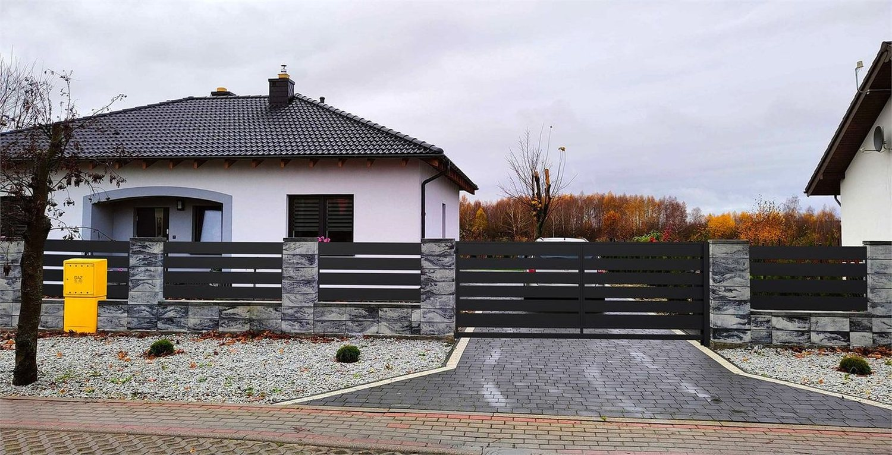
Ogrodzenie, brama, podjazd i taras. Sprzedajemy materiał, projektujemy układ i wykonujemy montaż. Można wziąć całość albo sam materiał z dowozem.
Zakres, który realizujemy najczęściej. Stawek nie podajemy z góry, bo każda działka jest inna. Po telefonie usłyszą Państwo widełki, a po pomiarze konkretną kwotę.
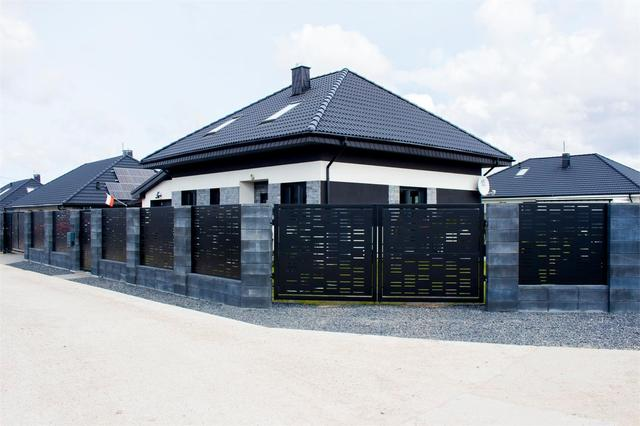
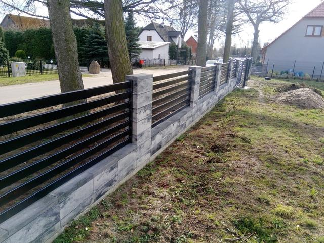
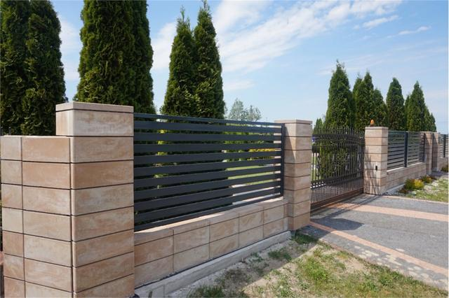
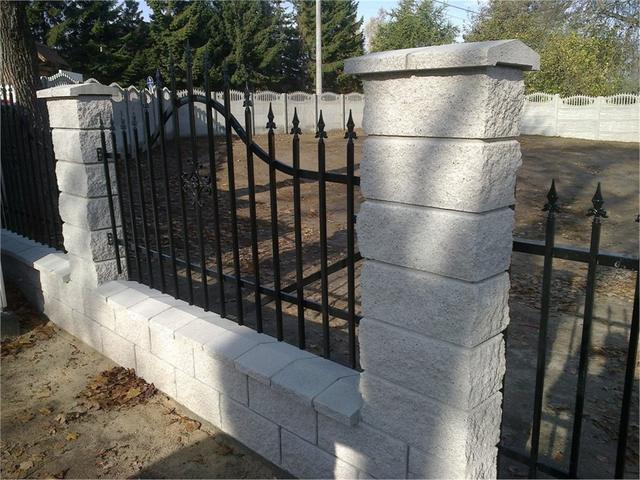
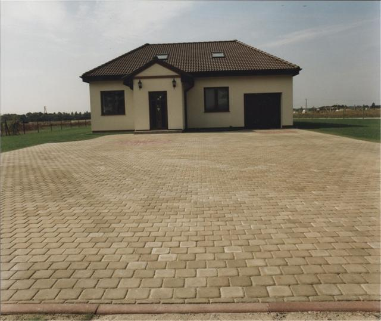
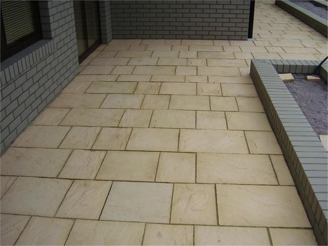
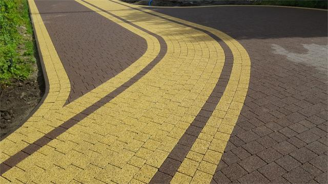
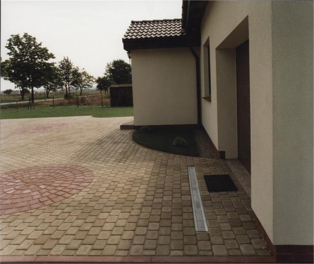
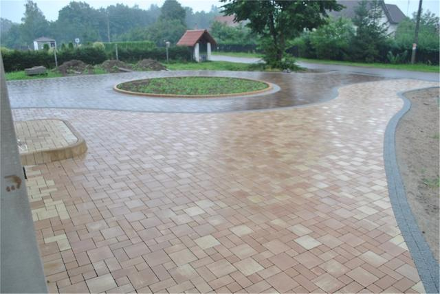
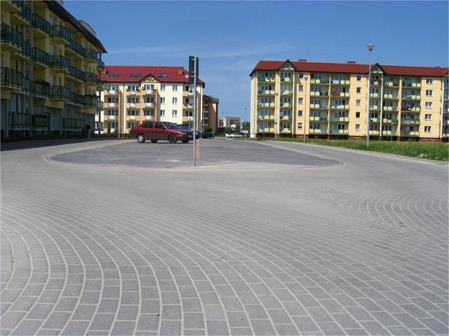
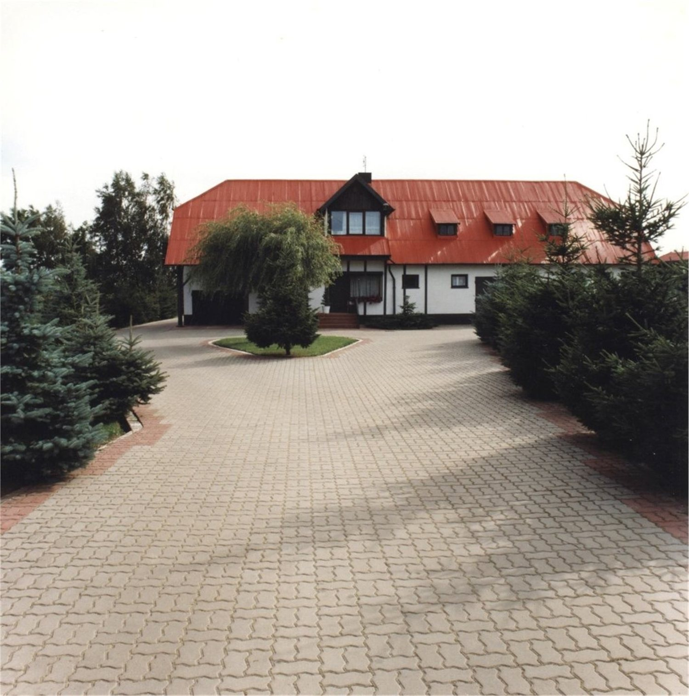
Robimy zarówno pojedynczy podjazd przy domu jednorodzinnym, jak i większe nawierzchnie dla firm, spółdzielni i gmin.
To normalne. Wystarczy telefon i krótki opis, co ma powstać. Podpowiemy rozwiązanie, które wygląda dobrze i mieści się w budżecie.